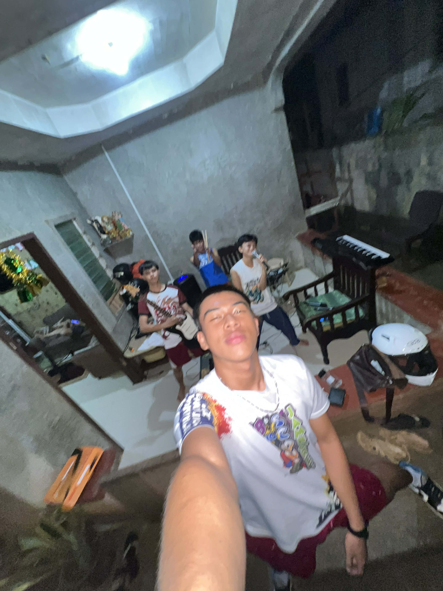
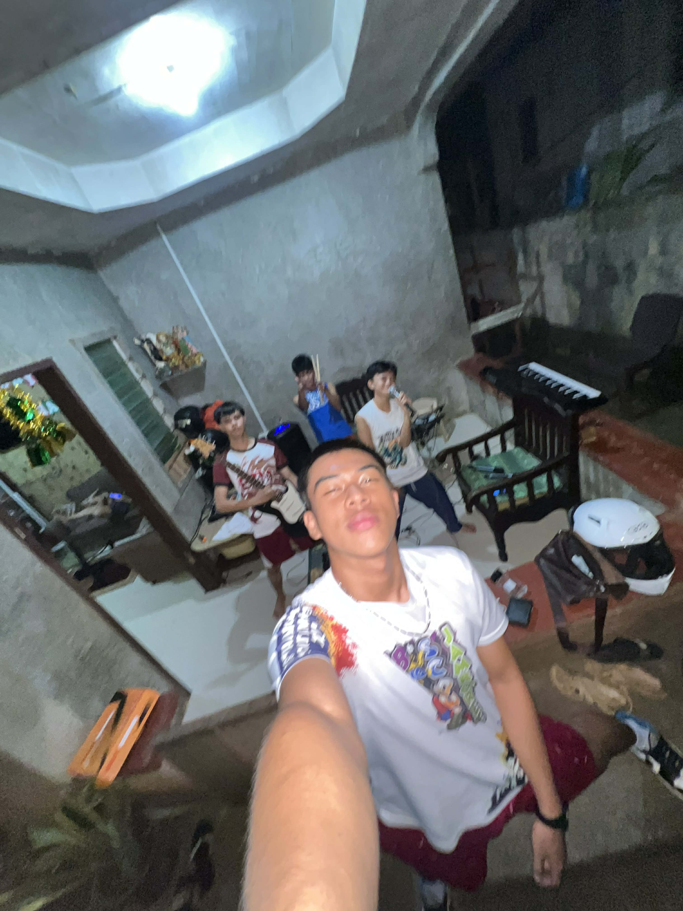

Tangub City Global College
Lux Mundi | Una ang Ginoo

.jpg) 

"This is my page for personal reflection on faith, integrity, and digital responsibility. As a student, I want this page to be a reflection of my personal beliefs and a way to inspire others to think about their own behavior. Through this page, I am reflecting on beliefs and sharing stories of things I have learned, times when I have attempted to be honest or kind, and how I personally handle technology in a responsible way. I think this page can be an important part of helping me personally grow and become a better individual, but it can also serve to inspire other students in our class to make integrity a habit and make decisions online and in life based on their faith. While this page is personal to me, it can also be a way to connect with each other and show how our actions can make a positive impact on those in our surroundings."

"The purpose of this Community Service and Advocacy Page is to record and share community, church, and school initiatives that are intended to help others. The idea is that modest actions can have big impacts. The community collaborates on charitable initiatives that support families in need. Participating in environmental campaigns and activities, such as tree planting and cleaning, also contributes to ecological preservation. These exercises provide useful insights into responsibility, empathy, and teamwork. Everyone is able to participate. Community strength, vitality, and an atmosphere of empathy are all fostered by solidarity with others. Together, these constitute the cumulative efforts that will result in the desired change."
There is no way, shape, or form to quantify love.
"The purpose of this Community Service and Advocacy Page is to record and share community, church, and school initiatives that are intended to help others. The idea is that modest actions can have big impacts.
The community collaborates on charitable initiatives that support families in need. Participating in environmental campaigns and activities, such as tree planting and cleaning, also contributes to ecological preservation. These exercises provide useful insights into responsibility, empathy, and teamwork.
Everyone is able to participate. Community strength, vitality, and an atmosphere of empathy are all fostered by solidarity with others.
Together, these constitute the cumulative efforts that will result in the desired change."
"Students learn how to use the internet responsibly, honestly, and thoughtfully from this educational and informative page. Being kind to others, refraining from making hurtful remarks, and posting thoughtfully are all examples of online etiquette that need to be practiced because in today's digital world, online behavior is equivalent to real-world character. Additionally, it emphasizes being truthful in digital creation, which includes, among other things, avoiding plagiarism, providing due credit, and producing original works. By using these appropriate digital behaviors, students contribute to making the internet a safer and more welcoming place for everyone. Capable digital citizens who set an example of responsible, considerate technology use for others are created through responsible behavior."
"This Faith and Technology Integration Page describes how spiritual messages, faith, and hope can be shared via modern technology. These days, social media, videos, and digital photos can be used to share inspirational words, prayers, and uplifting stories. Through the use of technology, people can connect with others who might be in need of encouragement and be reminded that they are not alone. Faith can be shown to reach a previously unreached audience by using the internet for a particular purpose and acting ethically. It will motivate and inspire readers to use technology not only for amusement but also to spread God's message of hope, love, and goodness."